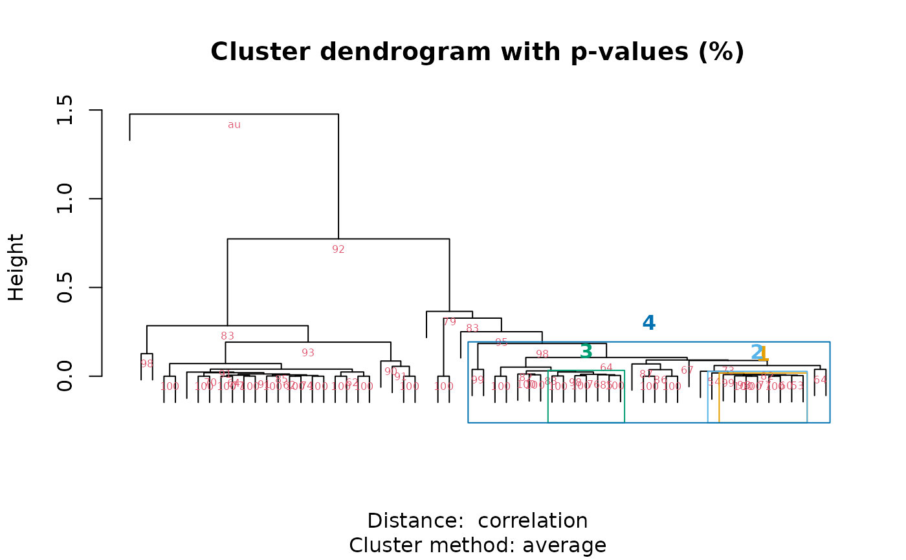
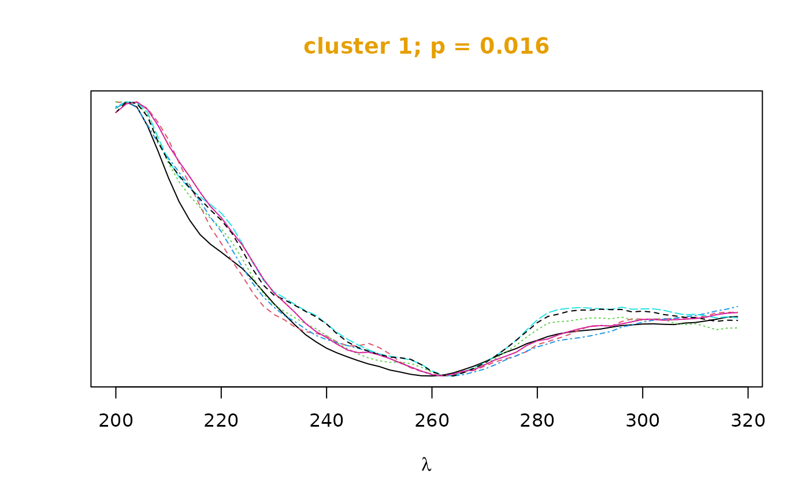
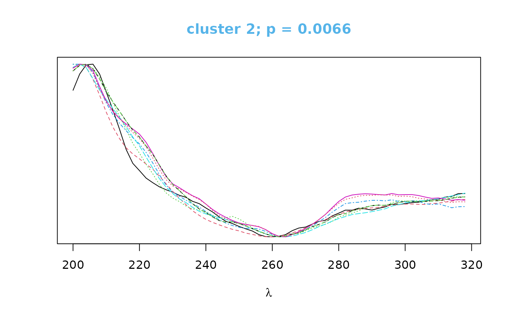
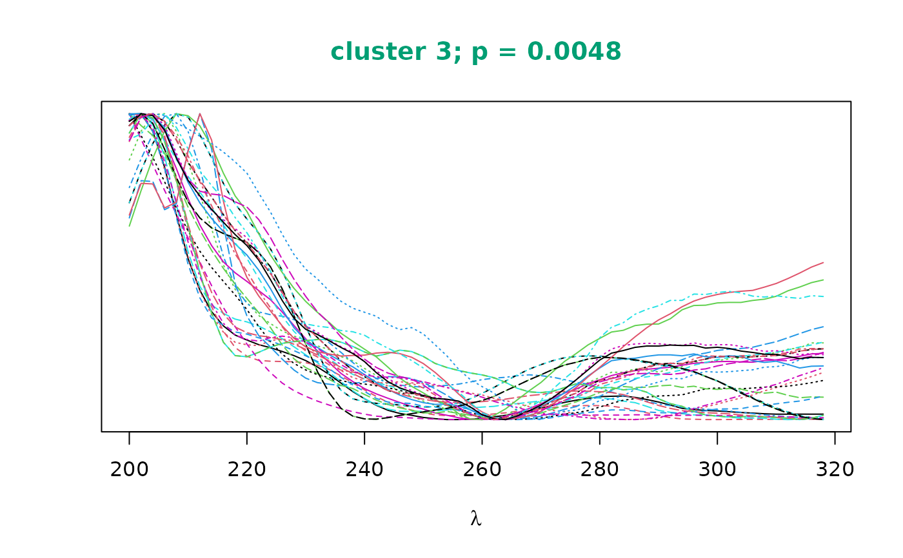

Cluster peaks by spectral similarity.
Usage
cluster_spectra(
peak_table,
alpha = 0.05,
min_size = 5,
max_size = NULL,
nboot = 1000,
plot_dend = TRUE,
plot_spectra = TRUE,
verbose = getOption("verbose"),
outfile = NULL,
save = NULL,
parallel = TRUE,
max.only = FALSE,
output = c("pvclust", "clusters"),
col = palette.colors(palette = "Okabe-Ito")[-c(1, 5, 9)],
...
)Arguments
- peak_table
A
peak_tableobject fromget_peaktable.- alpha
Significance threshold used to select clusters based on approximately unbiased (AU) bootstrap p-values from
pvclust.- min_size
Clusters must contain more than
min_sizepeaks. Defaults to5.- max_size
Clusters must contain fewer than
max_sizepeaks. Defaults to the number of peaks inpeak_table.- nboot
Number of bootstrap replicates for
pvclust.- plot_dend
Logical. If
TRUE, plots dendrogram with bootstrap values.- plot_spectra
Logical. If
TRUE, plots overlapping spectra for each cluster.- verbose
Logical. If
TRUE, prints progress report to console.- outfile
Optional path to an
.RDSfile. If notNULL, thepvclustobject is saved to file usingsaveRDS(). Existing files are overwritten.- save
The
saveargument is deprecated. Please useoutfileinstead.- parallel
Logical. If
TRUE, use parallel processing forpvclust.- max.only
Logical. If
TRUE, returns only highest level cluster from each nested set of clusters. Named to match the argument of the same name inpvrectandpvpick; passed topvpick.- output
What to return:
"pvclust"for thepvclustobject,"clusters"for the list of clusters, or both (the default).- col
Colors for each cluster's box and number on the dendrogram and the title of its spectra panel, recycled if there are more clusters than colors. Defaults to the Okabe-Ito palette, without black, yellow and grey.
- ...
Additional arguments to
pvclust.
Value
Returns a named list with an element for each value of output:
pvclust, the pvclust object, and clusters, a list of S4 cluster
objects.
The cluster objects consist of the following components:
peaks: a character vector containing the names of all peaks contained in the given cluster.pval: a numeric scalar containing one minus the approximately unbiased (AU) value thatpvclustreports for the given cluster, so that small values indicate strong support.
Details
Before using this function, reference spectra must be attached to the
peak_table using the attach_ref_spectra function. These spectra are
then used to construct a distance matrix from pairwise Pearson correlations
among peaks, and pvclust clusters the peaks
hierarchically, with bootstrap resampling. Clusters whose bootstrap support
exceeds the confidence set by alpha are returned. Peaks whose reference
spectrum is constant are dropped before clustering.
Clusters can be filtered by size using the min_size and max_size
arguments. The clustering algorithm often returns nested clusters, so an
individual peak can appear in more than one. If max.only is TRUE, only
the largest cluster in a nested tree of clusters meeting the confidence
threshold is returned.
The example uses nboot = 100 to reduce run time. For real data, the
pvclust authors recommend the default of 1000 replicates for a first look,
then 10,000 for smaller errors.
References
R. Suzuki & H. Shimodaira. 2006. Pvclust: an R package for assessing the uncertainty in hierarchical clustering. Bioinformatics, 22(12):1540-1542. doi:10.1093/bioinformatics/btl117 .
Examples
# \donttest{
if (requireNamespace("pvclust", quietly = TRUE)) {
data(pk_tab)
data(Sa_warp)
pk_tab <- attach_ref_spectra(pk_tab, Sa_warp, ref = "max.int")
cl <- cluster_spectra(pk_tab, nboot = 100, max.only = FALSE, alpha = 0.03)
}




# }